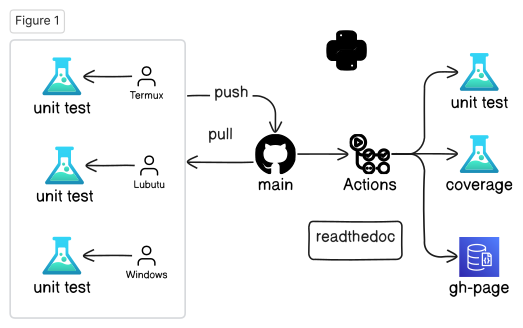
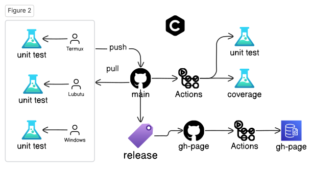
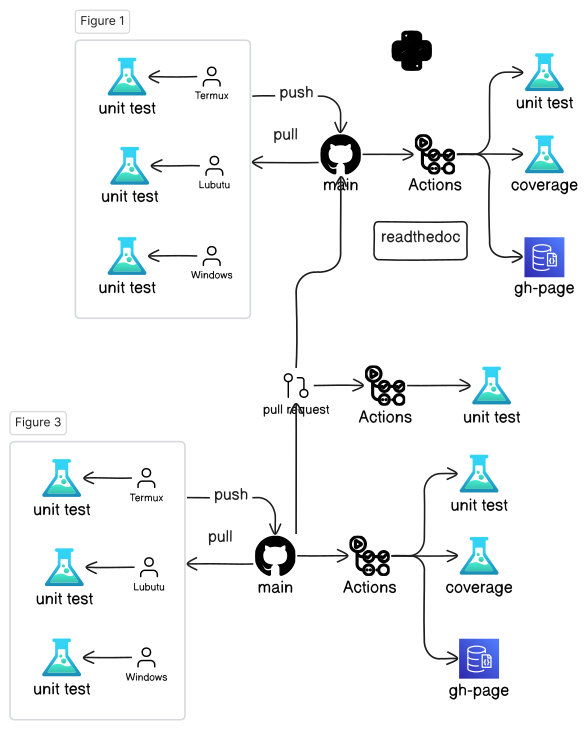

Lecture 2a: Open-Source Software Development Flow
💬 Messages
- About 99% projects fail.
- Software is "soft"; Hardware is "hard"
- Automation is hard
- Nightly build concept (Microsoft)
- Agile software development
- Pair programming
- Extreme programming
- Opensource projects - Continuous Integration
Platforms
- https://github.com
- gitpod.io - ☁️ cloud base
- Github's Codespaces - ☁️ cloud base
- Lubuntu
- Windows - MSVC++
- FydeOS (ChromeOS) - g++-13
- Android's Termux - clang-17
Open-source Work Flow (Python)

Open-source Work Flow (C++)

Pull Request

GitHub, Git
git clone https://github.com/luk036/csdigit
cd csdigit
(edit)
git status
git diff
git diff README.md
git pull
git add .
git commit -m "message"
git push
git tag
git branch # list all branches
git branch develop # create a new branch
git switch develop
git switch master
GitHub, gh
gh repo create csdigit --public
gh repo clone csdigit
gh run list
gh run view
gh release list
gh release create
gh issue list
gh issue create
gh search repos digraphx
Python
- Create a new porject
pip install pyscaffold[all]
putup -i --markdown --github-actions csdigit
- ⚙️ Setup
cd csdigit
pip install -e .
pip install -r requirements.txt
- 🧪 Unit Testing
pytest
pytest --doctest-modules src
- ⛺ Code Coverage
pytest --cov=src/csdigit
Python
- 🪄 Formatting and static check
pip install pre-commit
pre-commit run --all-files
- 📝 Documentation
pip install -r docs/requirements.txt
cd docs
make html
python -m http.server
- 📊 Benchmarking
pytest benches/test_bench.py
Rust
- Create a new project
.font-sm.mb-xs[
cargo install cargo-generate
cargo generate -o --init --git https://github.com/rust-github/template.git
]
- ⚙️ Setup
cd csd-rs
cargo build
- 🧪 Unit Testing
cargo test
cargo test --lib
cargo test --doc
- ⛺ Code Coverage
cargo tarpaulin (Windows)
Rust
- 🪄 Formatting and static check
cargo fmt
cargo clippy
cargo clippy --fix
- 📝 Documentation
cargo doc
cd target/doc
python -m http.server
- 📊 Benchmarking
cargo bench
C++ (CMake + CPM)
-
Create a new project
Use GitHub's ModernCppStarter template,
-
⚙️ Setup
cd csd-cpp
cmake -Sall -Bbuild -DCMAKE_BUILD_TYPE=Release
cmake --build build
- 🧪 Unit Testing
cmake --build build --target test
- ⛺ Code Coverage
??
C++ (CMake + CPM)
- 🪄 Formatting and static check
pip install cmake-format clang-format
cmake -Sall -Bbuild -DCMAKE_BUILD_TYPE=Release
cmake --build build --target fix-format
- 📝 Documentation
cmake --build build --target GenerateDocs
- 📊 Benchmarking
./build/bench/BM_switch
C++ (XMake)
- Create a new project
xmake create -t static lds-cpp
xmake create -t console csd-cpp
- ⚙️ Setup
xmake f -m debug
xmake
- 🧪 Unit Testing
xmake run test_csd
- ⛺ Code Coverage
??
C++ (XMake)
- 🪄 Formatting and static check
xmake format
- 📝 Documentation
xmake doxygen
- 📊 Benchmarking
xmake run test_bench
Lecture 2b: Programming in the Age of AI 🤖
Coding Tips 💡
- Test, test, test!!!
- Write cleaner code
- Refactor repeat codes
- Object oriented programming
- Generic programming
- Design Pattern
- Coroutine is your friend
- Learn from good codes, not bad ones.
- The last rescue: Google search.
Code generation
- AWS CodeWhisperer (VSCode's extension)
- generate testing code
Documentation generation
Mintlify (VSCode's extension)
- Naming
- a, i, p, n ❌
- A x = b
- x: unknown, x_axis
- x, y, z
Use better variable names
- p: point, polygon, polynomial, prev
- t: time, target, temp
- c: cost, cycle, coefficient
- d: distance, distribution
- e: edge
- v: vertex
- u, v, w: vertex1, vertex2
- i: index
- i, j: row, col
- i, j, k
- l, m: line1, line2
- n: dimension, node, next
- n, m: ndim, mdim
- w: weight, frequence (omega)
🚀 Performance Tips 💡
- Avoid string comparison
- Use sentinel
- Use cheaper measure, avoid
sqrt(),sin(),cos() - Lazy evaluation
- Table lookup
- Avoid sequence search:
- Backward pointers
- Hash Table/Dictionary/Map
Avoid string comparison
.pull-left[
Bad 👎:
if pin == "input":
# ...
elif pin == "output":
# ...
elif pin == "in_out":
# ...
elif pin == "dont_care":
# ...
else:
# ...
]
.pull-right[
Better ⚡:
pin_type = dict({"input":0},
{"output":1}, {"in_out":2},
{"dont_care":3})
...
id = pin_type.get(pin, -1)
if id == 0:
# ...
elif id == 1:
# ...
elif id == 2:
# ...
elif id == 3:
# ...
else:
# ...
]
Use Sentinel
.pull-left[
Bad 👎:
.font-sm.mb-xs[
max = 0
bckt = [Dllist() for _ in range(high)]
# ...
def popleft():
res = bckt[max].popleft()
while max >= 0 and bckt[max].empty():
max -= 1
return res
]
] .pull-right[
Better ⚡:
.font-sm.mb-xs[
max = 0
sentinel = Dllink()
bckt = [Dllist() for _ in range(high+1)]
bckt[0].append(sentinel) # sentinel
# ...
def popleft():
res = bckt[max].popleft()
while bckt[max].empty():
max -= 1
return res
# Saved a boundary check `max >= 0`
]
]
Use cheaper measure
.pull-left[
Bad 👎:
mind = 10000
maxd = 0
for u, v in G.edges():
t = vec[u] - vec[v]
* d = sqrt(t.dot(t))
if mind > d: mind = d
if maxd < d: maxd = d
*return maxd - mind
] .pull-right[
Better ⚡:
minq = 10000
maxq = 0
for u, v in G.edges():
t = vec[u] - vec[v]
* q = t.dot(t)
if minq > q: minq = q
if maxq < q: maxq = q
*return sqrt(maxq) - sqrt(minq)
]
Another Example
.pull-left[
Bad 👎:
mind = 10000
maxd = 0
for u, v in G.edges():
* t = 1 - vec[u].dot(vec[v])
* d = arcsin(sqrt(t))
if mind > d: mind = d
if maxd < d: maxd = d
*return maxd - mind
] .pull-right[
Better ⚡:
minq = 10000
maxq = 0
for u, v in G.edges():
* q = 1 - vec[u].dot(vec[v])
if minq > q: minq = q
if maxq < q: maxq = q
*return arcsin(sqrt(maxq)) \
* - arcsin(sqrt(minq))
]
Optimization Tips 💡
-
Convex optimization
-
Network optimization
-
Primal-dual paradigm